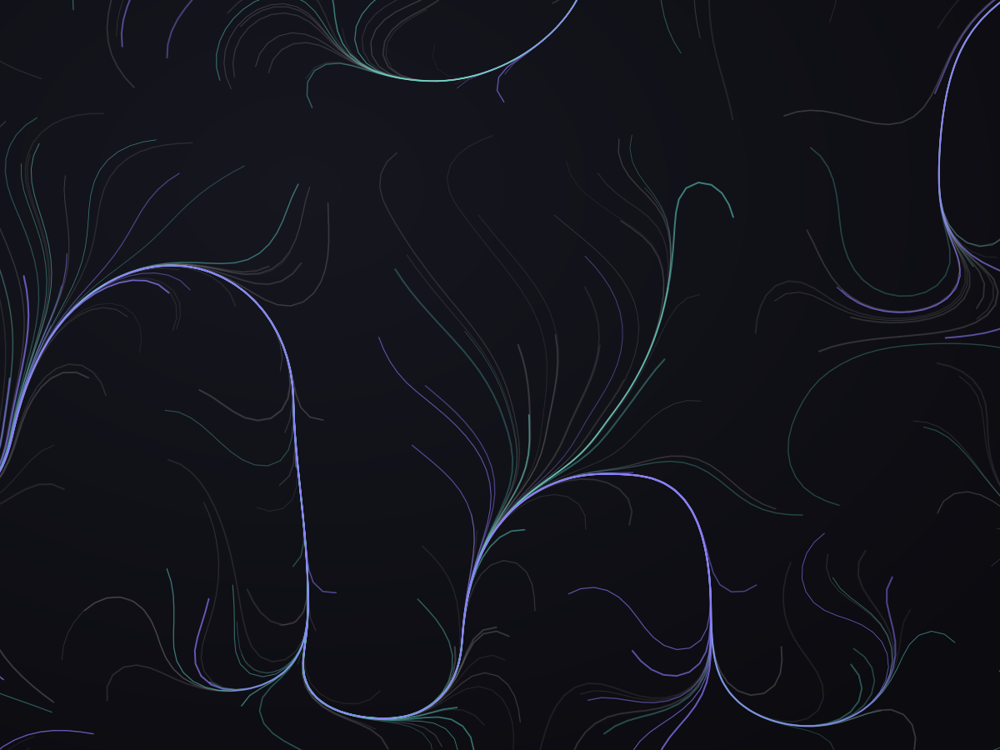
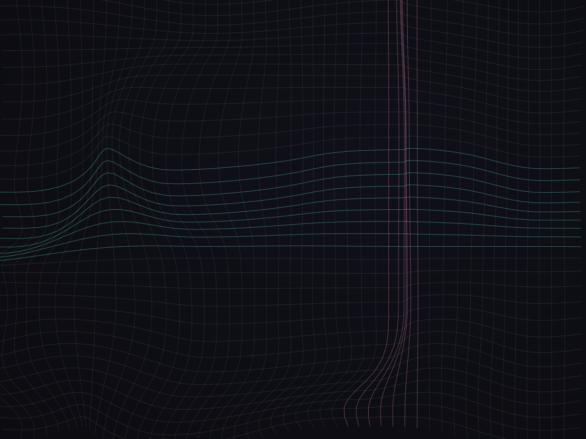
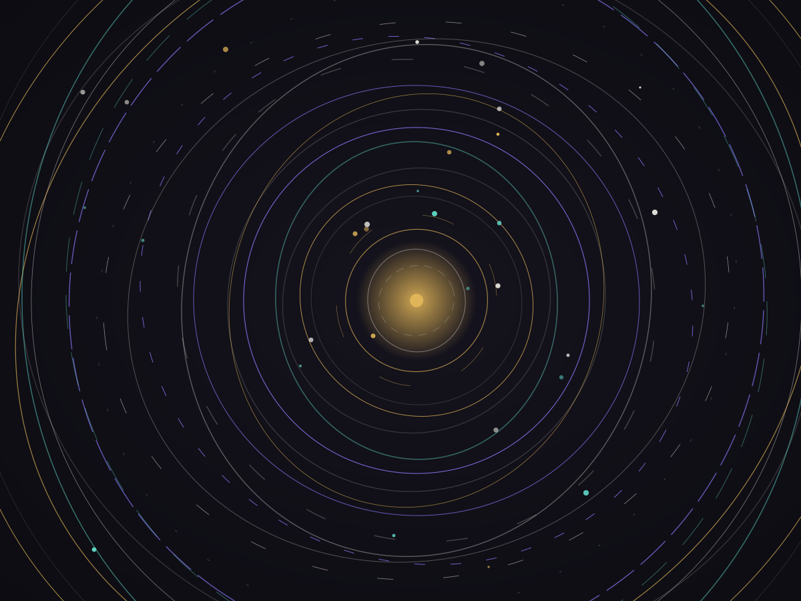
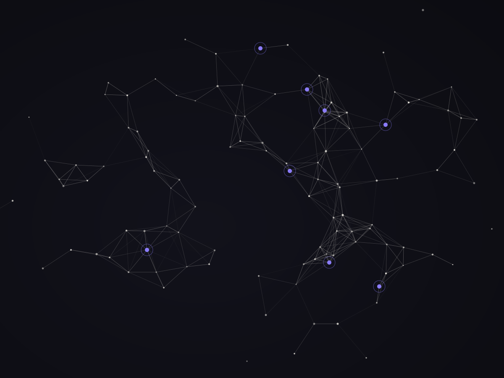

Independent design × engineering studio
THE MAGICIANS CODE
01 — The Pledge
Every great trick has three acts. The pledge — we study something ordinary: a dataset, a workflow, a blank screen. The turn — we design until the ordinary becomes extraordinary. The prestige — we engineer it so well that nobody asks how. They only ask for more.
Seen, not heard
Interfaces should feel inevitable. We obsess over motion, rhythm and type so the software gets out of the way of the story.
Measured, not guessed
Behind every flourish is an instrumented pipeline. Models, metrics and telemetry keep the magic honest.
Shipped, not staged
A prototype is a promise. We carry the work all the way to production — containers, clusters and all.
02 — The Turn
Selected
Works
-

N°01Deep Current
Real-time computer-vision pipeline for maritime traffic — detection, tracking and onnx-accelerated inference at the edge.
-

N°02Signal & Noise
Observability platform turning terabytes of telemetry into dashboards people actually read before the pager rings.
-

N°03Aurora Index
A search experience that feels like asking a friend — scraping, ranking and serving answers in the blink of a query.
-

N°04Counterspell
A motion-first design system — tokens, components and interaction grammar shared across web and Swift-native surfaces.
03 — The Prestige
Craft
- A
Creative Direction
Concept, narrative, art direction
- B
Interface Design
Web experiences, motion, typography
- C
Full-stack Engineering
APIs, platforms, native & web apps
- D
Machine Learning
Computer vision, inference at the edge
- E
Data Platforms
Search, pipelines, observability
04 — Encore